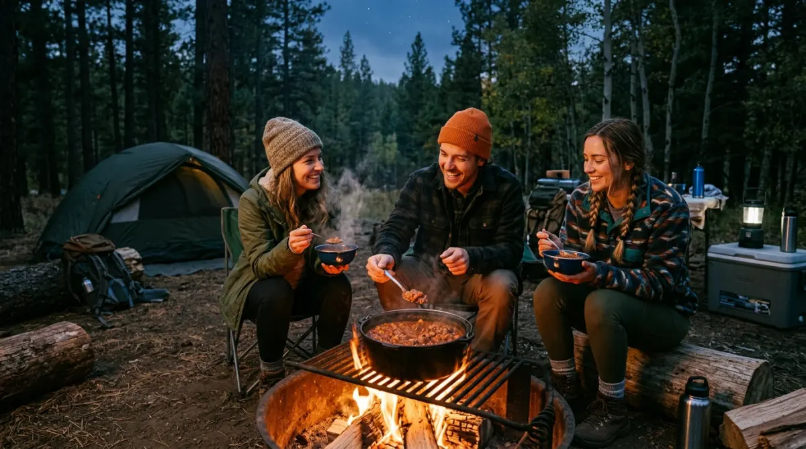

Menikmati makanan hangat saat camping adalah momen yang tak tergantikan di alam terbuka.
Menikmati makanan hangat saat camping adalah momen yang tak tergantikan di alam terbuka.
Pernahkah kamu membayangkan skenario ini: setelah seminggu penuh berkutat dengan deadline kantor dan revisi klien yang tiada henti, kamu akhirnya berhasil melarikan diri ke alam bebas. Udara dingin khas pegunungan Batu mulai menusuk tulang, tenda sudah berdiri tegak, tapi sayangnya... kamu lupa menyiapkan amunisi perut yang tepat.
Bahan makanan yang kamu bawa ternyata basi, dan mi instan rasanya sudah terlalu membosankan. Menyesal rasanya jauh-jauh mengambil cuti demi healing tapi malah kelaparan dan kedinginan di tengah hutan, bukan?
Sama seperti sebuah project besar yang gagal berantakan hanya karena miskomunikasi kecil di awal, momen camping-mu bisa rusak total hanya karena salah memilih menu logistik. Agar kamu tidak perlu mengalami penyesalan konyol tersebut, menyiapkan rencana makanan hangat untuk camping yang praktis, bergizi, dan tahan lama adalah sebuah kewajiban mutlak. Mari kita bahas ide menunya agar perutmu tetap nyaman, tubuh tetap hangat, dan kewarasanmu tetap terjaga semalaman!
Mengapa Persiapan Menu Nutrisi di Alam Bebas Itu Krusial?
Membawa perbekalan ke tempat berkemah tidak bisa dilakukan asal-asalan. Memilih menu masakan di gunung itu ibarat menyusun strategi Search Engine Optimization (SEO) untuk sebuah website; harus efektif, efisien, terukur, dan berdampak jangka panjang bagi tubuh.
Di dataran tinggi seperti kawasan Malang atau Batu, suhu malam hari bisa turun drastis. Tubuhmu secara otomatis akan membakar lebih banyak kalori hanya untuk menjaga suhu internal tetap stabil.
Sebagai penulis yang mengedepankan kualitas informasi yang faktual berdasarkan pengalaman nyata di lapangan (sesuai prinsip Experience, Expertise, Authoritativeness, and Trustworthiness atau E-E-A-T), aku sangat menyarankan agar kamu tidak hanya sekadar membawa makanan instan.
Makanan yang baik harus memenuhi standar kelayakan konsumsi di ruang terbuka. Di sinilah pentingnya mengaplikasikan prinsip Quality, Authority, Trust, Experience (QATEX) dalam merancang manajemen logistikmu.
Kualitas bahan pangan yang kamu bawa (seperti protein dan karbohidrat sehat) akan menentukan tingkat energi dan pengalaman kemahmu. Membaca panduan dari sumber tepercaya akan menghindarkanmu dari risiko keracunan makanan akibat bahan yang basi di jalan.
7 Rekomendasi Makanan Hangat untuk Camping yang Anti Basi
Berikut ini adalah daftar menu yang sudah dikurasi agar mudah dimasak menggunakan nesting (panci susun) atau kompor portabel, kaya akan nutrisi, dan pastinya tahan lama di suhu ruang sebelum dimasak.
1. Sup Makaroni Sosis Kuah Kaldu (Nutrisi Lengkap)
Menu berkuah adalah penyelamat utama saat udara mulai berkabut. Sup makaroni sangat masuk akal untuk dibawa karena bahan utamanya kering (makaroni pasta) dan sama sekali tidak berisiko basi selama di perjalanan.
- Cara persiapan: Bawa makaroni mentah, sosis siap makan (kemasan vakum yang tahan suhu ruang), sayuran tahan banting seperti wortel dan buncis, serta bumbu kaldu jamur instan.
- Cara masak: Rebus air di nesting, masukkan makaroni hingga setengah empuk. Tambahkan irisan wortel, sosis, dan taburan kaldu. Hidangan ini bukan hanya hangat, tapi juga menyediakan karbohidrat kompleks yang dicerna tubuh lebih lambat, memberikan energi stabil untuk melawan hawa dingin.
2. Nasi Gila Spesial ala Anak Kos (Bumbu Tahan Lama)
Siapa bilang di alam liar kamu tidak bisa makan enak ala comfort food Jakarta? Nasi gila adalah solusi cerdas karena kamu tidak perlu membawa daging mentah yang rawan busuk.
- Cara persiapan: Bawa beras secukupnya. Untuk lauknya, bawa sosis, bakso kemasan vakum, dan telur ayam (simpan di wadah egg holder khusus camping). Jangan lupa bawa bumbu dasar putih (bawang merah/putih halus) yang sudah ditumis matang dari rumah dan dimasukkan ke dalam botol kecil agar awet.
- Cara masak: Masak nasi terlebih dahulu. Setelah matang, sisihkan. Gunakan wajan portabel untuk menumis bumbu dasar, masukkan telur lalu orak-arik. Tambahkan sosis, bakso, kecap manis, saus sambal, dan sedikit air. Tuang di atas nasi hangat. Perpaduan manis, gurih, dan pedasnya akan langsung menaikkan mood-mu!
3. Tom Yum Suki Instan (Segar dan Menghangatkan)
Jika kamu merasa lelah setelah menyetir berjam-jam melewati rute Batu yang menanjak, rasa asam pedas dari kuah Tom Yum adalah booster yang sempurna.
- Cara persiapan: Beli pasta Tom Yum instan di swalayan. Bawa aneka seafood olahan beku (frozen dumpling, chikuwa, crab stick). Frozen food ini akan perlahan mencair (thawing) secara alami selama perjalanan dan aman untuk suhu pegunungan jika dikonsumsi di hari pertama.
- Cara masak: Rebus air, masukkan pasta Tom Yum, serai memar (jika ada), dan masukkan semua isian suki. Hanya butuh waktu 5-7 menit, hidangan setara restoran ini siap diseruput panas-panas dari mangkuk stainless steel-mu.

Memasak makanan hangat di alam terbuka menjadi pengalaman tersendiri yang mempererat kebersamaan.4. Oatmeal Gurih dengan Telur dan Sosis (Sarapan Sehat)
Sering kali kita malas memasak menu rumit di pagi hari karena udara masih sangat menggigit. Oatmeal gurih adalah jalan pintas mendapatkan sarapan bernutrisi super yang sangat praktis.
- Cara persiapan: Bawa rolled oats atau quick oats (sangat ringan dan tidak mungkin basi), telur, dan garam/merica.
- Cara masak: Rebus oatmeal dengan air kaldu atau air biasa matang, aduk hingga mengental. Di kompor lain (atau bergantian), goreng telur mata sapi setengah matang. Letakkan telur di atas oatmeal, taburi merica. Karbohidrat dari oat sangat baik untuk metabolisme pencernaan dan memberikan efek kenyang yang awet.
5. Roti Bakar Cokelat Keju Teflon (Cepat Saji)
Untuk camilan sore sambil menunggu matahari terbenam atau teman mengobrol di malam hari, roti bakar adalah pilihan klasik yang tak pernah salah.
- Cara persiapan: Bawa setangkup roti tawar tebal, margarin, meises cokelat, dan keju cheddar blok (keju cheddar olahan relatif aman di suhu ruang selama beberapa hari).
- Cara masak: Olesi roti dengan margarin, isi dengan cokelat dan parutan keju. Panggang di atas teflon portabel dengan api super kecil agar tidak cepat gosong. Tekstur renyah di luar dan lumer di dalam benar-benar memanjakan lidah.
6. Bubur Kacang Hijau (Hangat Tahan Lama)
Membawa kacang hijau mentah sangatlah aman dan menghemat ruang di dalam carrier atau bagasi mobilmu.
- Cara persiapan: Rendam kacang hijau di dalam botol air minum selama perjalanan menuju lokasi camping (ini adalah trik rahasia agar kacang cepat empuk saat direbus!). Bawa gula merah cair dan santan instan kemasan segitiga.
- Cara masak: Rebus kacang hijau yang sudah direndam hingga kulitnya pecah dan empuk. Masukkan gula merah cair dan sedikit jahe geprek. Terakhir, tuangkan santan instan. Wanginya akan menyebar ke seluruh area perkemahan!
7. Kopi Jahe dan Susu Cokelat Rempah (Amunisi Malam)
Sebuah sesi kemah tidak akan sah tanpa minuman panas. Daripada hanya kopi saset biasa, tingkatkan level minumanmu.
- Cara persiapan: Bawa kopi bubuk murni, cokelat bubuk, susu kental manis, dan jahe segar yang sudah dicuci bersih dari rumah.
- Cara masak: Bakar sedikit jahe di atas api kompor lalu memarkan. Masukkan ke dalam panci berisi air mendidih. Gunakan air rebusan jahe ini untuk menyeduh kopimu atau susu cokelatmu. Efek termogenik dari jahe akan langsung menghangatkan tubuh dari dalam, seolah-olah kamu sedang memakai selimut berlapis.
Tips Membawa Bahan Makanan Agar Tetap Segar
Agar semua rencana menu makanan hangat untuk camping ini berjalan lancar, pastikan kamu melakukan packing logistik dengan cerdas:
- Hindari Sayuran Berdaun Hijau Lembek: Bayam atau kangkung cepat layu dan membusuk jika kepanasan di jalan. Pilih sayuran kokoh seperti wortel, buncis, kentang, atau brokoli.
- Tumis Bumbu dari Rumah: Bawang merah dan bawang putih mentah rawan tergencet dan berbau di tas. Haluskan dan tumis bumbu dasar dari rumah menggunakan sedikit minyak, lalu simpan di botol kaca/plastik rapat. Bumbu ini bisa bertahan berhari-hari tanpa kulkas.
- Vakum Makanan Berprotein: Jika terpaksa membawa daging atau ayam olahan, pastikan dipak menggunakan plastik vakum kedap udara dan bekukan semalaman sebelum berangkat.
Jangan Biarkan Perut Kosong Merusak Ketenanganmu
Kembali bekerja di hari Senin dengan tubuh dan pikiran yang segar setelah camping adalah impian setiap pekerja keras. Jangan biarkan momen berhargamu di alam bebas berubah menjadi bencana hanya karena perut yang keroncongan atau keracunan makanan akibat bahan yang tidak awet.
Persiapan matang di rumah akan meminimalisasi kepanikan dan kerepotan saat kamu sudah berhadapan langsung dengan hawa dingin pegunungan. Rencanakan logistikmu dengan saksama, masaklah dengan gembira, dan nikmati setiap suapan hangat di bawah taburan bintang.
FAQ (Pertanyaan yang Sering Diajukan)